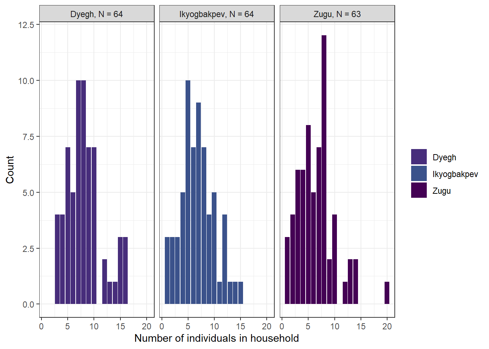
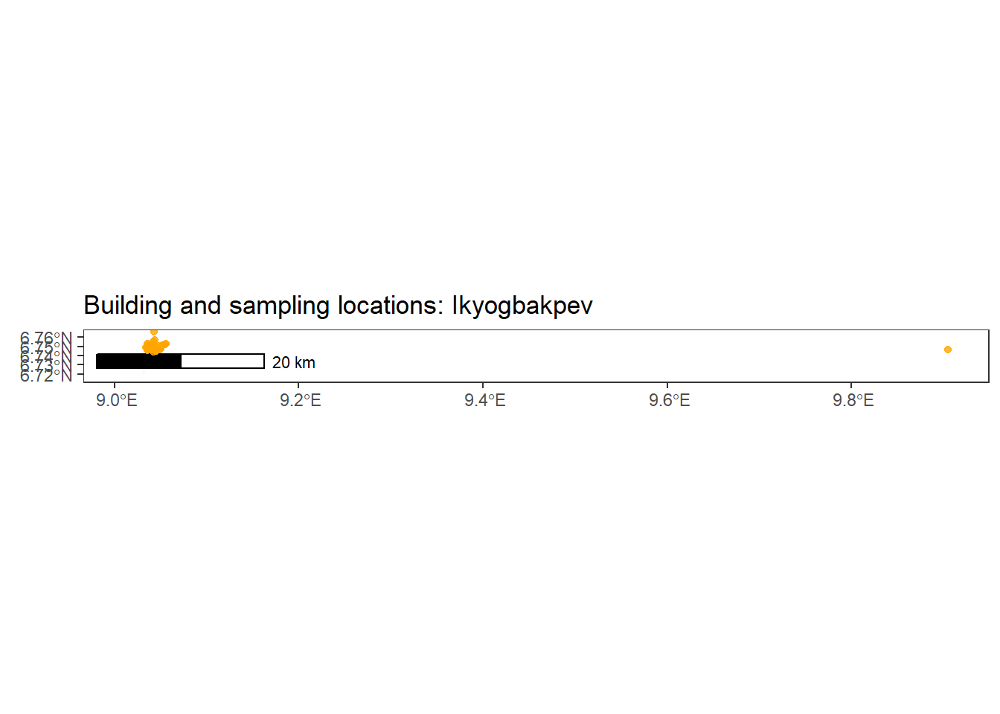
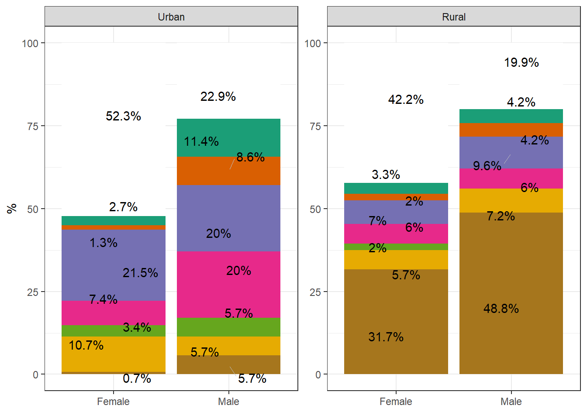
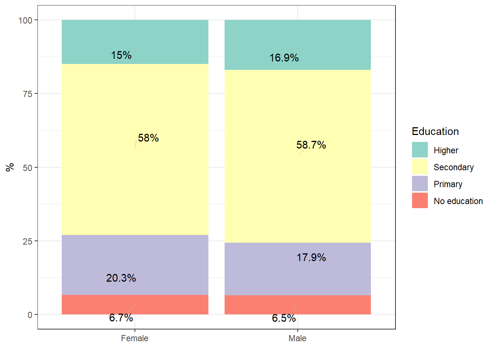
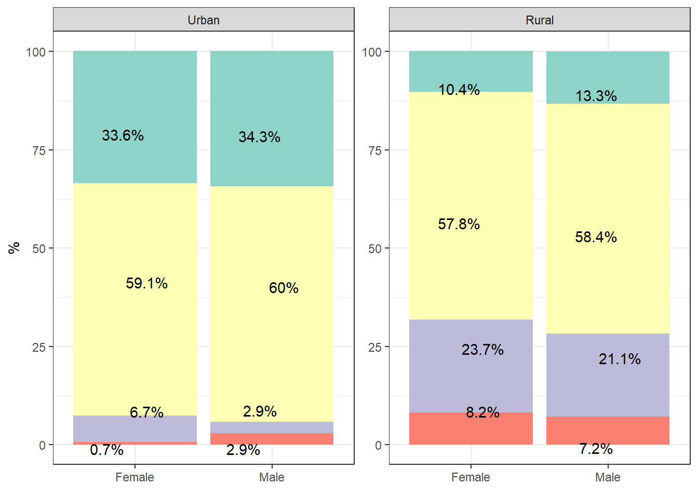
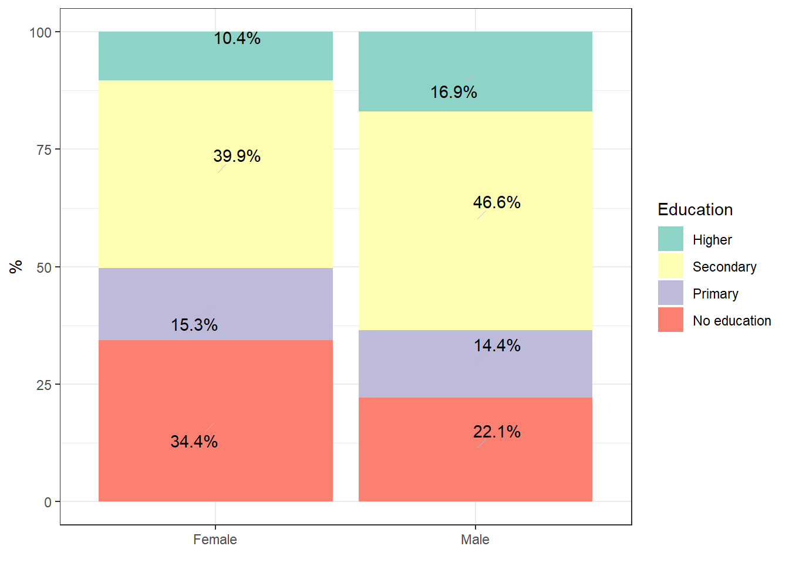

Monitoring SCAPES progress and sampling
Status
Data is being collected from 9 villages across 3 states. This document is to monitor sampling progress and assess the representativeness of our sampling within the villages. We do this by comparing to National and State level statistics. It may also be interesting to compare to data obtained as part of the LASV risk factor review.
129 households have currently been sampled between the period of 2023-12-08 and 2024-02-17. These households have been sampled in 3 village(s). These village(s) are Zugu - Benue, Dyegh - Benue, Ikyogbakpev - Benue.
Sample characteristics
Household size
The sampled households include 937 individuals with a median of 7 individuals per household and an interquartile range (IQR) of 4. This is slightly higher than the mean number of household members reported in the Nigeria DHS 2018 report of 4.3 (urban) and 5 (rural), however, based on the reported summary statistics this is not normally distributed and so the median may be more similar. Further, there may be important heterogeneity by region in Nigeria. Primary data access to the DHS to allow better comparisons has been requested.
Distribution of household sizes
Sex
457 females (0.49) and 477 males (0.51) are permanently or temporarily resident within these households. This compares to a 1.06 male/female ratio at birth (CIA World Factbook) and data from the DHS 2018 which suggests that women are more likely to reside in rural (54.2%) than urban (45.8%) settings and more so than males (53.6% rural vs. 46.4% urban).
Age
The sampled households have a median age of 17 (IQR = 24) which compares to a median age of 19.2 (CIA World Factbook). Females within the households sampled have a median age of 18 (IQR = 23) which compares to 19.4 for females from the CIA World Factbook. Males within sampled households have a median age of 15 (IQR = 25) which compares to 18.9 for males from the CIA world Factbook.
Population pyramid

Geographic
52 households have been sampled. 447 buildings have been identified within the village.
| village | n_buildings_identified | n_households_sampled | prop_of_buildings | weighted_sum_sample |
|---|---|---|---|---|
| Zugu | 447 | 52 | 0.12 | 4.84 |
0 households have been sampled. 565 buildings have been identified within the village.

| village | n_buildings_identified | n_households_sampled | prop_of_buildings | weighted_sum_sample |
|---|---|---|---|---|
| Dyegh | 565 | 0 | 0 | 0 |
0 households have been sampled. 697 buildings have been identified within the village.

| village | n_buildings_identified | n_households_sampled | prop_of_buildings | weighted_sum_sample |
|---|---|---|---|---|
| Ikyogbakpev | 697 | 0 | 0 | 0 |
0 households have been sampled. 67 buildings have been identified within the village.

| village | n_buildings_identified | n_households_sampled | prop_of_buildings | weighted_sum_sample |
|---|---|---|---|---|
| Okimbongha | 67 | 0 | 0 | 0 |
0 households have been sampled. 217 buildings have been identified within the village.
| village | n_buildings_identified | n_households_sampled | prop_of_buildings | weighted_sum_sample |
|---|---|---|---|---|
| Ogamanna | 217 | 0 | 0 | 0 |
0 households have been sampled. 201 buildings have been identified within the village.
| village | n_buildings_identified | n_households_sampled | prop_of_buildings | weighted_sum_sample |
|---|---|---|---|---|
| Ofonekom | 201 | 0 | 0 | 0 |
0 households have been sampled. 241 buildings have been identified within the village.

| village | n_buildings_identified | n_households_sampled | prop_of_buildings | weighted_sum_sample |
|---|---|---|---|---|
| Ezeakataka | 241 | 0 | 0 | 0 |
0 households have been sampled. 184 buildings have been identified within the village.

| village | n_buildings_identified | n_households_sampled | prop_of_buildings | weighted_sum_sample |
|---|---|---|---|---|
| Enyandulogu | 184 | 0 | 0 | 0 |
0 households have been sampled. 366 buildings have been identified within the village.
| village | n_buildings_identified | n_households_sampled | prop_of_buildings | weighted_sum_sample |
|---|---|---|---|---|
| Offianka | 366 | 0 | 0 | 0 |
Occupation
Occupation as a measure of representativeness will be assessed comparing the individual level surveys with data obtained from the DHS 2018. Comparisons will be made to State level and State stratified by urban/rural. Matching between our survey and DHS classifications for occupation will be limited by the level of detail provided in the DHS. The DHS has been conducted in Females aged 15-49 and Males aged 15-59.
| Individual questionnaire | DHS 2018 | ISCO-08 | ISCO-08 code |
|---|---|---|---|
| Farming | Agriculture/Agricultural - self employed | Field Crop and Vegetable Growers | 6111 |
| Assist with agricultural work (in household fields) | Agriculture/Agricultural - self employed | Subsistence Crop Farmers | 631 |
| Assist with agricultural work (in other households fields) | Agriculture/Agricultural - self employed | Subsistence Crop Farmers | 631 |
| Hunter/Trapper | Agriculture/Agricultural - self employed | Subsistence Farmers, Fishers, Hunters and Gatherers | 6340 |
| Fishing | Agriculture/Agricultural - self employed | Subsistence Farmers, Fishers, Hunters and Gatherers | 6340 |
| Timber | Agriculture/Agricultural - self employed | Subsistence Farmers, Fishers, Hunters and Gatherers | 6340 |
| Collect forest goods (NTFPs) | Agriculture/Agricultural - self employed | Subsistence Fishers, Hunters, Trappers and Gatherers | 6340 |
| Animal husbandry | Agriculture/Agricultural - self employed | Subsistence Livestock Farmers | 6320 |
| Trader | Sales | Street and Related Sales and Service Workers | 95 |
| Artisan/Handiwork/Carpenter | Skilled manual | Craft and Related Trades Workers | 7 |
| Driver | Other | Car, Van and Motorcycle Drivers | 832 |
| Teacher | Professional/technical/managerial | Teaching Professionals | 23 |
| Clergy (minister, pastor) | Professional/technical/managerial | Social and Religious Professionals | 263 |
| Student | Not working/NA/Did not work | N/A | N/A |
| Government worker | Clerical/Professional/technical/managerial | Business and Administration Associate Professionals | 33 |
| Pensioner | Not working/NA/Did not work | N/A | N/A |
| Other | Unskilled manual/Services | Elementary Occupations | 9 |
DHS sample: N = 1,634 (Female = 1,278; Male = 356), median age = 28 (Female = 27, Male = 32).


DHS sample: N = 949 (Female = 748; Male = 201), median age = 31 (Female = 30, Male = 34).


DHS sample: N = 1,666 (Female = 1,310; Male = 356), median age = 31 (Female = 29, Male = 37).

DHS sample: N = 55,132 (Female = 41,821; Male = 13,331), median age = 29 (Female = 28, Male = 32).

Education







Socioeconomic
This section will contain a comparison of household wealth and perhaps household building structures.